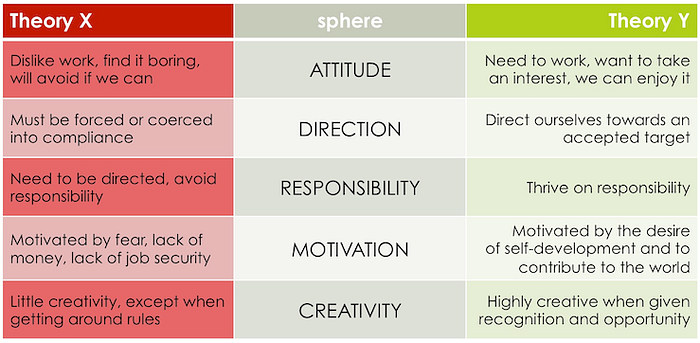

The Edge of Agility
Originally published at https://justiceconder.medium.com/the-edge-of-agility-48300bed1ab
Being a Scrum Master or Agile Coach isn’t for everyone. Let’s get that out of the way right up front. It requires not merely a unique set of skills but even more so, a particular outlook and disposition towards human beings. Servant leadership does not come naturally to human nature and assuming that others have good intentions and expressing a desire to help them is not something one can simply decide to have. It may be cultivated but it can not be created by the will if it is not already present. This is the ultimate agenda to the enlightened Agilist, to unlock the hidden potential of individuals, teams, and organizations. This was the jumping-off point of our conversation with Bernie Malony on The Modern Agilist.
People-Centered Systems
I like to think in terms of systems, processes, and procedures and tend to be put off by overly handy-wavy coach talk but a recent discovery has revolutionized my perception of this disposition. Humans are systems themselves and the most complex aspect of any system. This epiphany was brought about in the process of reading Management 3.0 by Jurgen Appelo. In it, he talks about The Law of Requisite Variety which states:
“If a system is to be stable, the number of states of its control mechanism must be greater than or equal to the number of states in the system being controlled.” — W. Ross Ashby
Extrapolating out from this, Appelo argues that people are the only things complex enough to deal with the variety of states a system may be confronted with. He goes on to state that:
“..if some level of control is needed in a project, you had better select people as the control mechanism. They are the only ones complex enough to actually pull it off.” — Jurgen Appelo
This is a massive but needed correction to systems and architect-oriented agilist. It is not to say that these other things are not important, it is to say that are subservient in the final analysis. Should this be any surprise to us? This is embedded in the very heart of Agile.
People-Centered Values
The very first value of the Agile Manifesto states:
Individuals and interactions over processes and tools.
And the fifth principle says to:
Build Projects Around Motivated Individuals.
These two axioms work in random to establish and promote human-centered delivery. These not only define the best way to organize and optimize delivery, but they also act as a safety net to protect the system from crumbling under an ever-increasing bureaucracy. Bureaucracy is similar to technical debt except that instead of being code, its adopted process and procedures.
Only a human mind has sufficient complexity and meta-cognition to recognize and address it with operational refactors. Only humans are capable of asking the what, why, and how of the system. Which these values and principles are firmly established, and the organization has hope of being a true Humanocracy when a system is a tool and not the taskmaster.
People-Centered Practice
This is all fine and dandy but how do you put this into practice?
- Connect. The first step is to start thinking of people as people and not as fungible objects. Meet, talk, connect and share. Even modifying one’s language to talk about individuals rather than “resources” is a good start to adjusting one’s outlook. Well-known speaker and entrepreneur Gary Vaynerchuk recently said of one of his massive conferences was that his number one goal was to meet every single person and make them feel important.
- Start with why. Appeal to individuals’ innate sense of meaning and purpose. Watch Simon Sinek’s video on this and think about the way you are seeking to influence others and delegate responsibility.
- Amplify Motivation. Theory X and Theory Y posit two competing models of human motivation. The first argues that people primarily only work out of necessity and through external stimuli. The second argues that people work naturally from internal motivations and that it is fundamentally little different from play. Tap into the Theory Y of seeing things and reassess your worldview of human beings. This, probably more than anything, has the potential to revolutionize your dealings with others and empathy for them. Empathy is a superpower granting uncommon vision into human behavior.

Simon Sinek’s “Start With Why” and “Leaders Eat Last” books paint this picture beautifully arguing for a radical return to human-centered thinking, trust, and empowerment.
People-Centered Evaluation
Okay, but how is any of this measured or evaluated? How can agilists demonstrate their own usefulness to an organization in this context? How is this function measured, valued, or demonstrated? We are accustomed to thinking only of measuring value through a system and value delivered to the user but there is a second and, arguable, more important metric. It is this: the happiness of the people.
This is even more important because it’s the machine that builds the machine or the ecosystem that supports the organism if you prefer non-mechanistic imagery. If you take care of the people, they take care of the system. This is deep knowledge. What this means in practice is that the success and happiness of the org is the success of the Agilist. Tony Shay of Zappos emblazoned this in his companies vision statement and set a new standard in the process:
“We aim to inspire the world by showing it’s possible to simultaneously deliver happiness to customers, as well as employees, vendors, shareholders, and the community, in a long-term, sustainable way.” — Zapos Vision
Practically, this means shifting to the right in the areas of taking space vs making space, and in tell-assertive vs ask-assertive communication and facilitation.
Go Deeper
Do you have what it takes to be a Scrum Master? After stepping through the above, I’m not sure I do. But like all things, this is about the process and incremental improvement, not perfection and the final destination. This is an infinite game, not a finite one. If you are a technical writer or gifted communicator with an interest in systems thinking, start your journey down the rabbit hole of Agile by listening to The Modern Agilist and joining the conversation on LinkedIn or Twitter. Join us as we go deeper into the wonderland of human psychology, coordination, organizational design, and math theory all through the lens of large-scale software delivery.
51
51
1